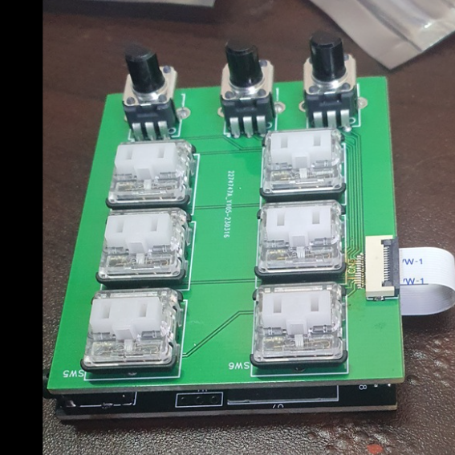
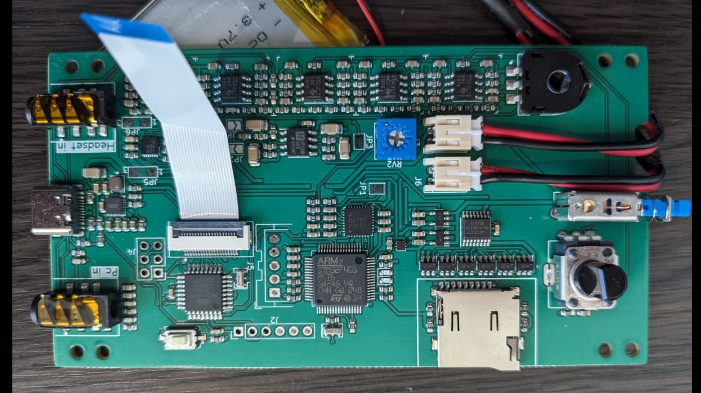
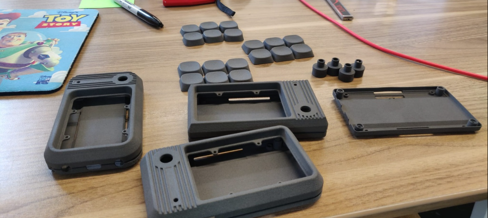

Sfxer PSB6 - Pocket Soundboard
A pocket-sized 6-key polyphonic soundboard built on a dual-PCB stack - STM32F401 MCU driving an ADAU1701 SigmaDSP for real-time audio effects, with Kailh hot-swap mechanical keys, per-key addressable RGB LEDs, dual TRRS audio pass-through, MicroSD storage, and USB-C charging. Designed from schematic to production files across 8+ board revisions.
Technical Specs

Dual-Board Architecture
The PSB6 uses a two-PCB stackup connected by a 12-pin 0.5mm-pitch FPC cable. The top board (Board 1) carries six Kailh CPG135001S30 hot-swap mechanical key sockets with SK6812MINI-E addressable RGB LEDs underneath each key, plus six SMTSO2010CTJ threaded inserts for the enclosure. The bottom board (Board 2) contains all electronics - the STM32F401RCT6 MCU, ADAU1701 SigmaDSP, audio signal chain, power management, MicroSD slot, and USB-C connector.
This separation keeps the mechanical and electronic concerns isolated, allowing independent iteration on each board. The key switches are connected through the FPC ribbon cable, with each key pulled up internally and debounced in firmware with a 50ms delay.
Audio Signal Chain
Audio input from a headset mic enters through one TRRS 3.5mm jack (PJ-320D), passes through the MAX9814 AGC microphone preamplifier for automatic gain normalization, then routes through the PI3A27518ZDEX analog multiplexer for signal path switching. The ADAU1701 SigmaDSP processes the audio with programmable effects - waveform generation (sine, sawtooth, square, triangle), filtering, and mixing - before output through the TLV9062 dual op-amp for signal conditioning and the HT1308ARZ Class-AB stereo headphone driver to the second TRRS jack.
Sound effects from the MicroSD card are mixed in by the STM32 via the WaveTooEasy audio engine at 44.1kHz, supporting up to 10 simultaneous polyphonic WAV channels with volume ramping for smooth starts and stops.

Firmware Architecture
The STM32F401RCT6 runs a custom firmware built on the Artekit WaveTooEasy platform. Each of the 6 keys maps to an audio channel with a PlayersPool managing allocation - short press triggers playback of /0X/Y.wav (bank X, key Y), long press (>2 seconds) stops the channel immediately. Key 6 doubles as a bank-switch modifier: hold Key 6 + press Keys 1–5 to switch between five sound banks, each with its own configurable RGB color.
The firmware reads a config.ini from the SD card at boot, loading per-bank LED colors, brightness levels, blink timing, speaker/headphone volumes, and LED enable/disable settings. Battery voltage is monitored via ADC using the internal VREFINT reference and an external resistive divider (R1=154kΩ, R2=47kΩ), with a dedicated LED indicator that turns red below 3.5V and green above 3.6V, updating every 60 seconds.
DSP Processing (ADAU1701)
The experimental firmware integrates the Analog Devices ADAU1701 SigmaDSP via I2C (address 0x34) running at 48kHz. DSP parameters are generated from SigmaStudio and compiled into fixed-point coefficients loaded at runtime. The DSP pipeline supports real-time waveform synthesis (sine, sawtooth, square, triangle generators), programmable EQ, and audio mixing - enabling voice modulation and effects processing without taxing the main MCU.
The DSP firmware is stored in an external 256Kbit I2C EEPROM (24AA256) and can self-boot when the SELFBOOT pin is tied to VCC, or be programmed live from the STM32 over I2C.

PCB Design & Manufacturing
The hardware went through 8+ board revisions in KiCad 7, evolving from an initial ESP32-PICO-D4 + PCM5102 DAC concept through ATmega + WaveTooEasy, to the final STM32 + ADAU1701 architecture. Notable revision milestones include RevA (mirrored LEDs), RevB (corrected LED orientation), RevE (proto2 production run), and the current working version with perpendicular FPC connector and extension port.
The project maintains a custom KiCad component library with standardized naming conventions, custom footprints (Kailh hot-swap sockets, SK6812MINI-E LEDs, threaded inserts), and 3D STEP models for every component - from the audio jacks and USB-C connector to the Alps Alpine potentiometers and Kailh key switches. Production files (BOM, pick-and-place positions, netlists) are generated for JLCPCB SMT assembly.
Sound Bank System
The MicroSD card stores sounds in a folder-per-bank structure (01/ through 05/), with 6 WAV files per bank numbered 1.wav through 6.wav. The firmware constructs the file path dynamically: char filename[] = "\\0X\\Y.wav" where X is the current bank and Y is the key index. Five pre-loaded banks include action sounds (punch, explosion, gun), comedy effects (fart, burp), notification tones (Discord, wow), movie clips (finish-him, violin), and a user-customizable bank. Users load custom sounds by plugging in USB-C, which exposes the SD card as a mass storage device via the GL823K USB-to-SD controller.

Enclosure & Industrial Design
The enclosure is 3D printed in multiple interlocking parts - a main shell, top plate with key cutouts, bottom cover, and internal mounting hardware. The design accommodates the dual-PCB stack, LiPo battery, volume knob, power switch, and side-mounted TRRS audio jacks and USB-C port, all within the compact ~100mm × 45mm pocket-sized form factor.